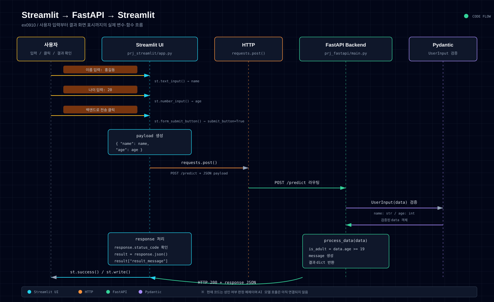

STREAMLIT · FASTAPI · PYDANTIC
버튼 클릭부터
결과 표시까지.
사용자 입력이 JSON 요청으로 바뀌고, FastAPI와 Pydantic을 거쳐 다시 Streamlit 화면에 표시되는 전체 흐름입니다.
작은 화면에서는 그림을 좌우로 밀어 확인할 수 있습니다.

01Streamlit
입력값으로 payload를 만들고 POST 요청을 보냅니다.
02FastAPI + Pydantic
라우팅 후 타입을 검증하고 서비스 로직을 실행합니다.
03응답 화면
응답 JSON을 읽어 성공 메시지와 결과를 표시합니다.